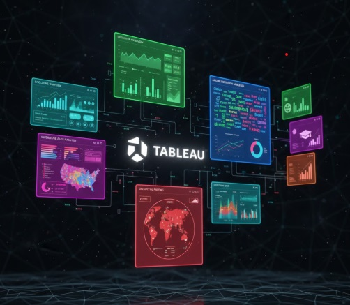

This project involved developing a robust store management application in Python, utilizing dictionaries for data persistence and the Flask-Smorest framework to build modular, clean REST API endpoints capable of processing new and existing stores and items. The application's integrity was ensured by packaging it in Docker Containers to guarantee a consistent testing environment, where rigorous validation was conducted using Insomnia to confirm the functionality of all Flask-Smorest Testing endpoints. This comprehensive workflow included documenting the specific commands used for Docker Container Testing and validating the deployment strategy with Docker commands for the Flask REST API.


Full lifecycle—from cleaning to modeling and interpreting data
This capstone project delivered a robust data science solution by first establishing a clean, quantified foundation through **data validation** and Getting to Know the Data to pinpoint statistically relevant features. Leveraging skills in **data manipulation** and **statistical analysis**, the workflow progressed to Feature Engineering, creatively transforming raw inputs before implementing predictive Modeling to generate insights. The project culminated in clear communication of results by Visualizing and Interpreting Data, providing a comprehensive overview of the analysis and findings (see the full Project Overview).

My Tableau portfolio showcases a range of interactive data visualizations, including an Executive Overview, Superstore Sales Analysis, and Airline Sentiment Analysis dashboards featuring complaint trends, tweet sentiment, and word clouds. Additional visualizations explore topics such as medical salaries, film analytics, education data, and geospatial mapping (ZipCode and Symbol Maps). These projects highlight my ability to transform raw data into clear, actionable insights through engaging and interactive dashboards.
This project analyzes and visualizes 40 years of music industry revenue, focusing on the shift between Physical and Digital formats. Using a Stacked Area Chart, I highlighted the industry's transition, showing Digital revenue growth overtaking Physical formats. The workflow included data cleaning, chart selection, custom axis formatting, legend optimization, and direct labeling for clarity. Key industry events, such as the 2003 iTunes launch, were annotated to tell a clear historical story. The final visualization communicates trends and composition changes in an accessible format for a general audience, demonstrating both analytical rigor and data storytelling skills.
This collection of projects demonstrates my end-to-end data analytics workflow using Power BI and Power Query. Each project focuses on connecting and profiling raw datasets, building reusable custom functions, and shaping data through transformations and appending to create analysis-ready tables. Screenshots and detailed documentation provide insight into my methods for ensuring data accuracy and consistency throughout the process. The resulting datasets are optimized for modeling, visualization, and actionable reporting, highlighting my ability to turn complex data into meaningful business insights.

This project documents a step-by-step Power BI analysis of U.S. government employment data
sourced directly from the Bureau of Labor Statistics (BLS). The focus is on real-world
data acquisition, Power Query transformations, and correcting common time-series
visualization errors such as improper month sorting.
Rather than over-interpreting fluctuations, the analysis emphasizes responsible
labor market interpretation by explaining how fiscal calendars, budget cycles,
and temporary hiring pauses can impact month-over-month trends.
Skills demonstrated: Power BI Web Connector, Power Query,
data reshaping (unpivoting), date modeling, time-series correction,
visual emphasis, and professional analytical documentation.
This project demonstrates a complete ETL (Extract, Transform, Load) and Exploratory Data Analysis (EDA) workflow using core Python only—without libraries like Pandas or NumPy. Data from the Johns Hopkins COVID-19 Repository was cleaned, transformed, and analyzed using CSV, namedtuple, and defaultdict modules. The analysis computed key metrics such as average active cases, total cases, and deaths, and derived Case Fatality Rates (CFRs) for regions including the EU, U.S., and North America. This project showcases a full analytical lifecycle from ingestion to insight using Python fundamentals.
If you’d like to get in touch, feel free to reach out via email or LinkedIn. I’m open to discussing potential collaborations, data analytics projects, or career opportunities.
{kind=link}
{kind=link}
{kind=link}
{kind=link}